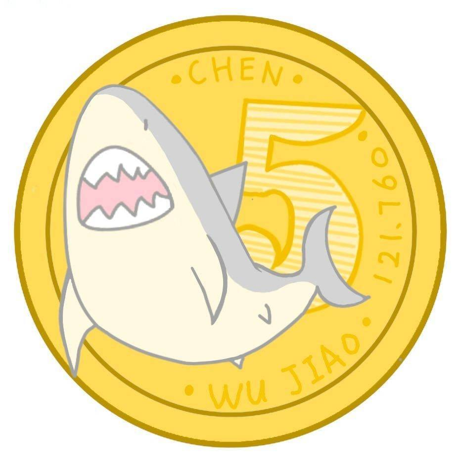

About Me
I am a M.S. candidate in Materials Physics and Chemistry at Guangdong University of Technology, expected to graduate in June 2027.
My research focuses on crystal structure prediction, machine learning-assisted materials design, and first-principles calculations. I am particularly interested in materials genome, machine learning interatomic potentials, and molecular dynamics.
I am currently working on (1) embedding prediction models into crystal structure prediction software for multi-objective optimization and (2) performance prediction and molecular dynamics simulations of all-solid-state batteries.
I am looking for a PhD position starting Fall 2027.

Education
Undergraduate education
Publications
Interpretable descriptors enable prediction of hydrogen-based superconductors at moderate pressures
Materials Today Physics, 2026, 63: 102073
Other publications
High-Throughput Screening of Bulk Boride Superconductors with Honeycomb-Ruby Frameworks
Inorganic Chemistry, 2026, 65(10): 5731–5739
Physical Chemistry Chemical Physics, 2023, 25(38): 26043–26048
Crystal structure prediction of stable quaternary hydrides in the Cs–Li–Rh–H system
Physica B: Condensed Matter, 2026, 741: 419177
Projects
Interpretable Descriptors for Hydrogen-Based Superconductors
Constructed interpretable SISSO descriptor models to predict the critical temperature of hydrogen-based superconductors at moderate pressures. Published in Materials Today Physics (2026, 63, 102073). The prediction formulas have been packaged into a Python tool and an online calculator.
- Python
- SISSO
- VASP
- Superconductors

USPEX Analyzer
Listed on the USPEX official website as a recommended community tool. USPEX Tools →
Analyze USPEX crystal structure search results in your browser. Use convex hulls and Pareto fronts to assess relative stability and compare multiple objectives, then filter and export candidate structures.
- USPEX
- Crystal Structure Prediction
- Convex Hull & Pareto Analysis
- Scientific Software


SISSO-Analyzer
A browser-based tool for validating, comparing, and visualizing SISSO candidate models, including holdout metrics, Pareto fronts, and per-model diagnostics.
AI-assisted companion: SISSO-Sage reviews predictive evidence, feature metadata, and extraction code to identify several scientifically defensible candidate formulas. SISSO-Sage →
- SISSO
- Symbolic Regression
- Interpretable ML
- Scientific Software


Honors & Awards
- Exempted from Graduate Entrance Examination
Other honors
- Graduate Elite Talent Program, Guangdong University of Technology
- First-Class Graduate Scholarship (2024, 2024–2025), Guangdong University of Technology
- Third Prize, South China Undergraduate Physics Experiment Competition (2022)
- Second Prize, Guangdong Division of the National Mathematical Contest in Modeling (2022)
- Outstanding Student Scholarship (2020–2023), Guangdong University of Technology
Get in Touch
If you are interested in my research, have questions about my projects, or would like to discuss potential opportunities, feel free to reach out.